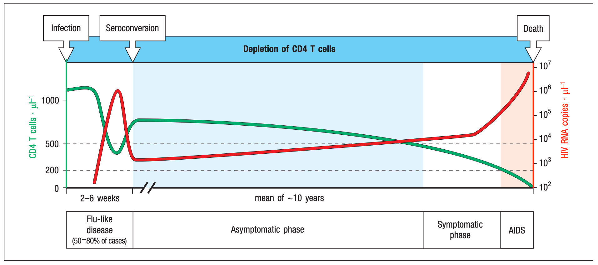
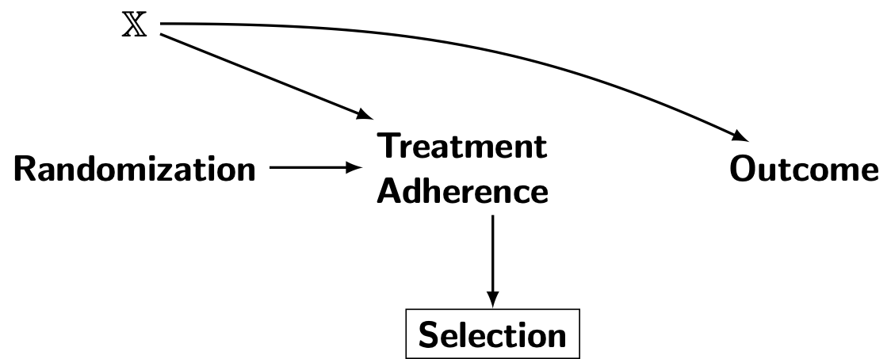
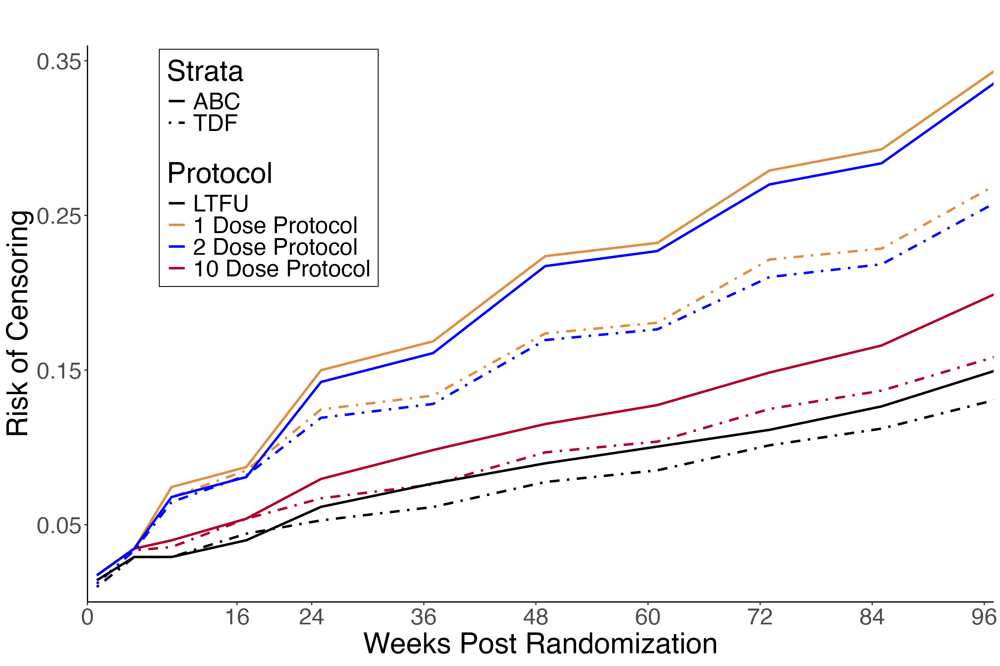
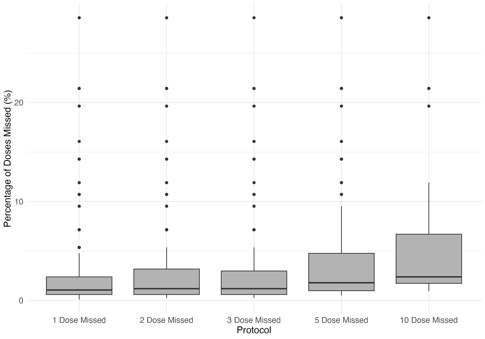
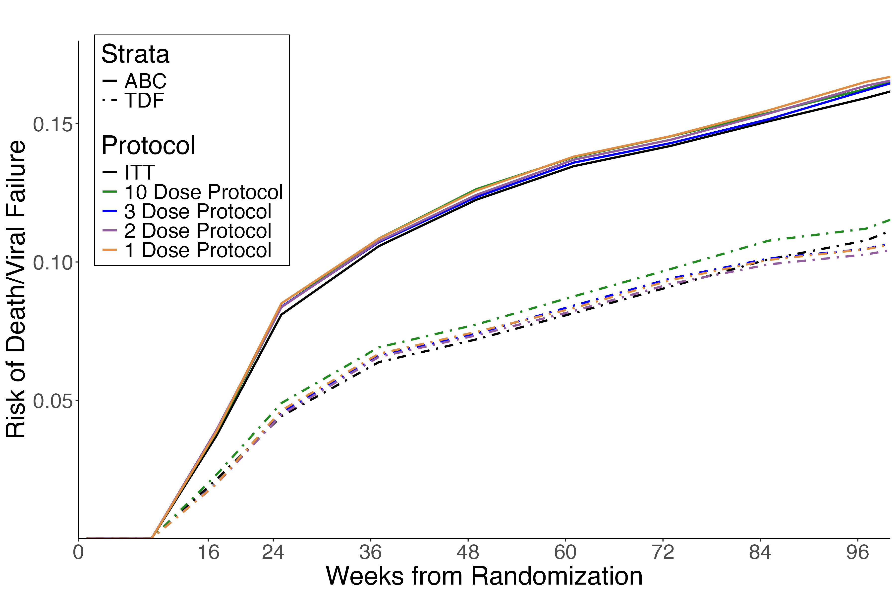
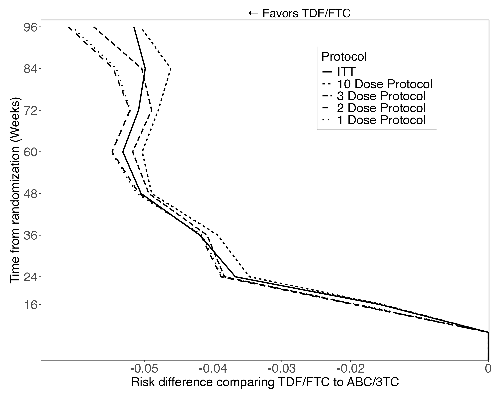
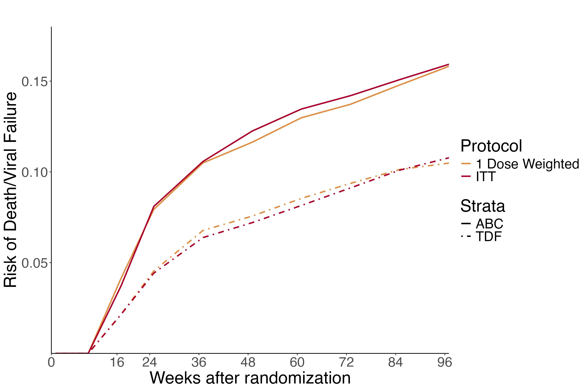

Improving Inferences from Randomized Trials.
Using per-protocol analyses to estimate effects of HIV treatment.
December 3, 2025
Preliminaries
- Please hold questions until the end, unless necessary for clarification
Background
HIV Infection is acute and chronic
Janeway’s Immunobiology 9th ed., Chp 13
Adherence plays a role in HIV treatment efficacy
Majority report adherence levels <90%; plurality <80%.
Adherence needed to achieve viral suppression varies by treatment.1
Blanket recommendations fail to capture these differences.
Understanding of how adherence impacts efficacy is critical2 for
- Devloping New Treatments
- Maximizing Current Treatments
RCTs are the gold standard for estimating treatment effects
Require clear enrollment criteria; Unambiguous intervention protocol
Exchangeability1: \(P[Y^{a}=1|A=1]=P[Y^{a}=1|A=0]=P[Y^a=1]\)
Consistency2: \(Y=Y^{a=1}A+Y^{a=0}(1-A)\)
Positivity: \(P[A=a]>0\)
Estimands in RCTs
There are many estimands available in an RCT
- Two primary ones are Intent to treat (ITT) and per protocol (PP)
| ITT | PP | |
|---|---|---|
| Estimand | \(E\left[Y^{r=1}- Y^{r=0}\right]\) | \(E\left[Y^{r=1, \bar{a}=1}- Y^{r=0, \bar{a}=0}\right]\) |
| Effect being measured | treatment assignment | treatment assignment and protocol adherence |
| Analyzes based on random assignment | ✅ | ✅ |
| Analyzes only those who initiate | ❌ | ✅ |
| Analyzes only those who adhere to assignment1 | ❌ | ✅ |
Per-protocol effects can be biased
- Estimation of the per-protocol effect is much like an observational study
- Thus, bias can arise from non-exchangeability, non-consistency, or non-positivity
- Excluding those that dont adhere induces bias
- Per protocol can deviate from ITT when deviation accounted for1
 Bias be addressed with modern methods: inverse probability of censoring weighting (IPCW) or the parametric g-formula
There is more than one per protocol effect
Prior studies have consider The protocol, But many exist
Rudolph et al.1 highlights at least 6 per protocol estimands
“What if I take all my doses?”
“What happens if I miss doses?”
Per Protocol depends on how investigators define treatment and the disease being studied
Can the efficacy of treatment be evaluated under multiple scenarios of non adherence?
Can the efficacy of treatment be evaluated under multiple scenarios of non adherence?
- Can this be evaluated in a single trial?
Can the efficacy of treatment be evaluated under multiple scenarios of non adherence?
Can this be evaluated in a single trial?
Does it have an impact on how well medications perform?
Aims
Aim 1:
Review of Phase 3/4 RCTs from Lancet, NEJM, JAMA, BMJ, Nature Med from 2020-2025
Evaluated how often per protocol analyses 1) were mentioned 2) were done accounting for adherence
Key Findings:
Of the 114 studies, 45 (40%) had some form of per-protocol analysis reported;
only 2 (6.5%) noted the number/proportion of missed doses
only 1 used methods to account for adherence
Industry funded had a lower proportion of per-protocol analyses compared to those with no industry funding (10% versus 66%)
Aim 2:
Evaluate the impact of the definition of protocol deviation on per-protocol estimates using data from the AIDS Clinical Trials Group (ACTG) 5202
Estimand: \(E\left[Y^{r=1,\bar{a}=1}\right]-E\left[Y^{r=0,\bar{a}=0}\right]\) at 48 and 96 weeks
AIDS Clinical Trial Group (ACTG) 5202
Overview:
- Phase 3b RCT reported in 20091 and 20112
- 59 sites, US and Puerto Rico
Inclusion Criteria:
- \(\leq 7\) days of prior ART, \(\geq 16\) years old.
- HIV-1 RNA \(>1000\) copies/mL within days
Exclusion Criteria:
- Breastfeeding
- On immuno- or chemotherapy
- Other HIV therapy or investigational drugs \(\leq 30\) days prior to screening
- Allergies to study drugs
- Substance abuse or serious illness; psychiatric disease, incarceration, conduction abnormality.
Exposures of interest
Randomized 1:1:1:1 to
- TDF/FTC + (EFV or ATV/r)
- ABC/3TC + (EFV or ATV/r)
Stratified by HIV-1 RNA screening level:
- \(< 100,000\)
- \(\geq 100,000\)
Medication self administered
Gandhi et al. NEJM. 10.1056/NEJMct12155
Adherence
- Adherence evaluated in-person at 8, 24, 48, 72, 96, then every 24 weeks and either at the final study evaluation or after virologic failure.
| Last Time Missed Medication | How close was Dose Schedule Followed |
|---|---|
| Never | Never |
| \(>3\) months ago | Some of the time |
| 1-3 months ago | About half the time |
| 2-4 weeks ago | Most of the time |
| 1-2 weeks ago | All the time |
| Within the past week | |
Outcomes of interest
- Proportion of participants that deviated from the assigned protocol over multiple definitions of protocol deviation \[\downarrow\]
| Adherence | Definition of Variable |
|---|---|
| 1 dose missed | Participant with only one report of missed dose |
| 2 doses missed | Participant with only 2 reported missed dose |
| \(\vdots\) | \(\vdots\) |
| 10+ doses missed | Participant with \(\geq 10\) reported missed dose |
\[\downarrow\]
Virologic Failure defined as:
- HIV-1 RNA level ≥1000 copies /mL between 16 and 24 wks or
- ≥200 copies/mL at or after 24 wks
Covariates
Baseline Variables
- Age
- Sex
- Screening HIV-1 RNA levels (stratification variable, \(<100,000\) or \(\geq 100,000\))
- Baseline log\(_{10}\) HIV-1 RNA
- Race/Ethnicity
Time-Varying Variables1
- CD4 count
- log\(_{10}\) HIV-1 RNA
Analysis
Inverse Probability of Censoring Weighted Kaplan Meier Estimator
\[ \widehat{S}_{T}^\omega(t \mid r)=\prod_{\left\{j: t_j \leq t\right\}}\left(1-\frac{\sum_{i=1}^n I\left(X_i=t_j\right) \widehat{\omega}_{i j}^c I\left(R_i=r\right) Y_i}{\left\{\sum_{i=1}^n I\left(X_i \geq t_j\right) \widehat{\omega}_{i j}^c I\left(R_i=r\right)\right\}}\right) \]
- pooled logistic regression to estimate the numerator and denominator of stabilized weights
- \(t_j={48,96}\)
- Robust Variance estimator for SE
A note on data structure
| Id | Ever Outcome | Outcome Week | Ever Deviate | Deviation Week |
|---|---|---|---|---|
| 123 | 1 | 16 | 1 | 48 |
\(\rightarrow\)
| Id | Week | Ever Outcome | Outcome | Ever Deviate | Deviation |
|---|---|---|---|---|---|
| 123 | 0 | 1 | 0 | 1 | 0 |
| 123 | 4 | 1 | 0 | 1 | 0 |
| 123 | 8 | 1 | 0 | 1 | 0 |
| 123 | 12 | 1 | 0 | 1 | 0 |
| 123 | 16 | 1 | 1 | 1 | 0 |
| 123 | 24 | 1 | NA | 1 | 0 |
| 123 | 48 | 1 | NA | 1 | 1 |
Results
The population of ACTG5202
| ABC/3TC | TDF/FTC | Overall | |
|---|---|---|---|
| N | 928 | 929 | 1857 |
| Age (median[IQR]) | 38 [30, 45] | 39 [31, 45] | 38 [31, 45] |
| Male % (n) | 81 (755) | 84 (780) | 83 (1535) |
| Race % (n) | |||
| Asian | 1 (11) | 2 (15) | 1 (26) |
| Black or African American | 35 (321) | 34 (313) | 34 (634) |
| white | 59 (546) | 59 (544) | 59 (1090) |
| Other | 5 (50) | 6 (57) | 6 (107) |
| Not Hispanic or Latino % (n) | 77 (714) | 77 (714) | 77 (1428) |
| Baseline log RNA (median[IQR]) | 4.66 [4.33, 5.01] | 4.66 [4.31, 5.06] | 4.66 [4.33, 5.01] |
| Baseline CD4 (median[IQR]) | 230 [90, 334] | 228.75 [84, 338] | 230 [90, 334] |
| History of AIDS % (n) | 19 (172) | 15 (140) | 17 (312) |
| Screening HIV RNA \(\geq 100\)K copies/ mL %(n) | 43 (398) | 43 (399) | 43 (797) |
Population in ACTG5202 that deviated from protocol
| No doses missed | 1 dose missed | 10 doses missed | |
|---|---|---|---|
| N | 1519 | 338 | 51 |
| Age (median[IQR]) | 38 [31, 46] | 37 [30, 43] | 36 [28, 43] |
| Male % (n) | 83 (1267) | 79 (268) | 84 (43) |
| Race % (n) | |||
| Asian | 1 (22) | 1 (4) | 0 (0) |
| Black or African American | 31 (471) | 48 (163) | 55 (28) |
| White | 62 (937) | 45 (153) | 39 (20) |
| Other | 6 (89) | 5 (18) | 6 (3) |
| Not Hispanic or Latino % (n) | 76 (1152) | 82 (276) | 88 (45) |
| Baseline log RNA (median[IQR]) | 4.7 [4.4, 5.1] | 4.6 [4.3, 4.9] | 4.5 [4.2, 5] |
| Baseline CD4 (median[IQR]) | 229 [87, 333] | 231 [113, 336] | 223 [81, 336] |
| History of AIDS % (n) | 16.9 (257) | 16 (55) | 18 (9) |
| Screening HIV RNA \(\geq 100,000\) copies/mL % (n) | 45 (676) | 36 (121) | 26 (13) |
| Treatment Assignment % (n) | |||
| TDF/FTC | 51 (776) | 45 (153) | 45 (23) |
| ABC/3TC | 49 (743) | 55 (185) | 55 (28) |
Deviations increase over time
The percentage of missed doses was low
There was no difference across missed dose protocols


Our analysis creates potential ties
| Id | Week | Ever Outcome | Outcome | Ever Deviate | Deviation |
|---|---|---|---|---|---|
| 123 | 0 | 1 | 0 | 1 | 0 |
| 123 | 4 | 1 | 0 | 1 | 0 |
| 123 | 8 | 1 | 0 | 1 | 0 |
| 123 | 12 | 1 | 0 | 1 | 0 |
| 123 | 16 | 1 | 1 | 1 | 1 |
| 123 | 24 | 1 | NA | 1 | NA |
| 123 | 48 | 1 | NA | 1 | NA |
\(\rightarrow\)
| Id | Week | Ever Outcome | Outcome | Ever Deviate | Deviation |
|---|---|---|---|---|---|
| 123 | 0 | 1 | 0 | 1 | 0 |
| 123 | 4 | 1 | 0 | 1 | 0 |
| 123 | 8 | 1 | 0 | 1 | 0 |
| 123 | 12 | 1 | 0 | 1 | 1 |
| 123 | 16 | 1 | 1 | 1 | NA |
| 123 | 24 | 1 | NA | 1 | NA |
| 123 | 48 | 1 | NA | 1 | NA |
Sensitivity analysis did not change the results

Wrapping up
What have we learned
Per protocol effects can be varied, but are frequently done poorly through exclusion1
In the ACTG5202 estimates for different levels of missed doses did not differ from the ITT
We had limitations in our study
We only used a subset of possible adherence definitions
Limited adherence data
Limited covariate set
Questions?
Acknowledgments
ACTG5202 Patients and study team
My Committee: Steve Cole, Jess Edwards, Bonnie Shook-Sa, Charlie Poole, David Wohl
UNC Dept of Epi
Paul Zivich
Cole lab members: Mark Klose, Catie Weiner, Catherine Li
My Epi cohort and all my instructors
My amazing wife and daughters, Margo, Emma, and Lucy
Per-protocol effects differ from the ITT
| Disease | Methods | Change from ITT | |
|---|---|---|---|
| Cain and Cole 2009 Stat Med | HIV Tx | IPW | Further from Null |
| Lu et el. 2019 Trials | HIV Tx | IPW | No Change |
| Lodi et al. 2016 AIDS | HIV Tx | G-formula | Further from Null |
| Lodi et al. 2021 Trials | HIV Tx | IPW | Further from Null |
| Naimi et al. 2021 Ann Int Med | Obstetrics | G-Formula | Further from Null |
| Szmulewicz et al. 2023 J Psychopharm | Mental Health | IPW | Effect Reversal |
Assumed Data Generating Mechanism

\(j\): follow up time, \(\mathbf{L}_j\): vector of covariates at follow up time \(j\),
\(A_j\) : treatment at follow up time \(j\), \(R\): randomization, \(Y\) : viral failure or death
Improving Inferences from RCTs; Dec 3 2025